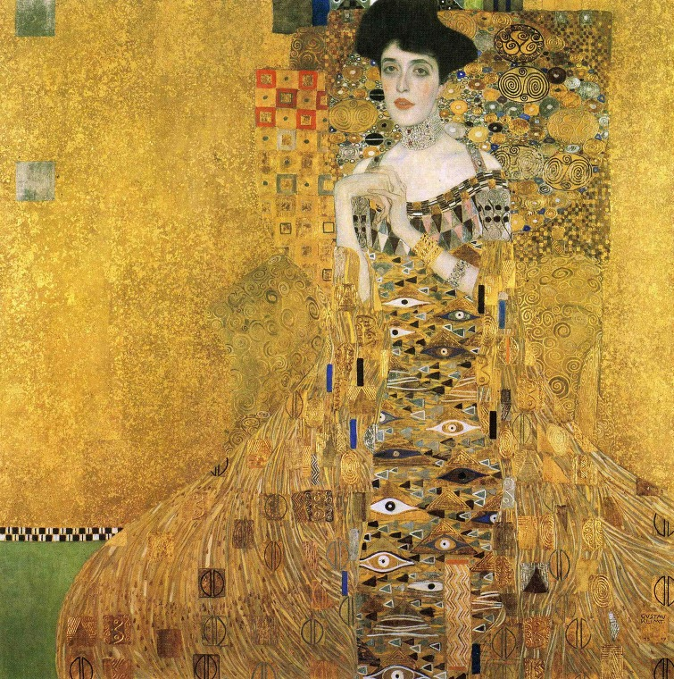
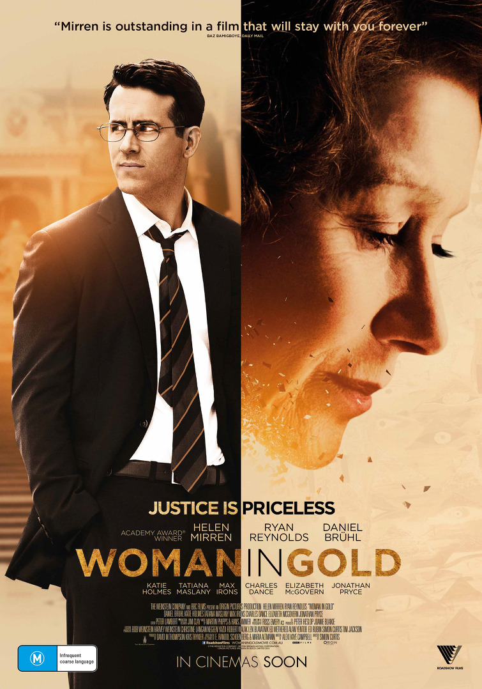
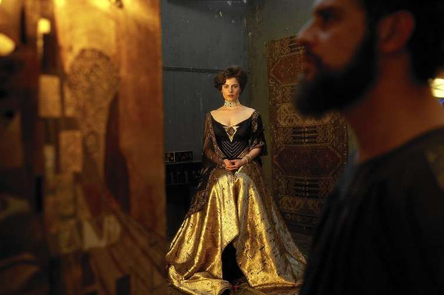
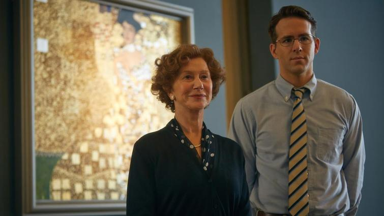
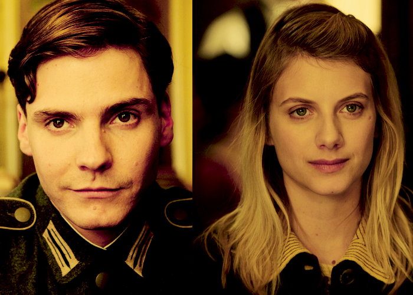

뜻 밖의 과거사 청산 영화 - 우먼 인 골드 (Woman in Gold)
게시: 2019-08-01T06:30:41+09:00
(한 4년 전에 썼던 글인데, 이번 일본과의 외교 갈등과 연관된 내용이라서 다시 올립니다. 지금 진행 중인 일본과의 외교 갈등의 시작은 강제 징용 당한 개인이 일제에 의해 입은 피해에 대해 개인적인 소송을 제기하면서 벌어진 것입니다. 거기에 대해 한국 대법원은 개인이 소송을 걸 수 있다고 판결한 것이고요. 아래 내용 중 '이제 세계 질서가 무너질텐데 그건 다 저 할머니 때문이라는 이야기냐' 라며 재판정이 웃음바다가 되는 이야기가 떠오르더군요.) 이 '우먼 인 골드'(Woman in Gold)라는 영화는 아무 사전 지식 없이 보면 몇단계의 오해를 거치게 됩니다. 처음에는 '예술 영화인가?' 라고 시작을 했다가 '알고 보니 법정 영화로군!'이라고 이해를 하게 됩니다. 그러나 끝까지 다 보고 나면 비로소 이 영화가 '나찌의 희생양인 척 했던 오스트리아의 추악한 과거를 어떤 식으로 반성하는 것이 옳은가'에 대한, 즉 과거 청산에 대한 영화라는 것을 아실 수 있습니다. 이 영화 줄거리는 간단합니다. 2차세계대전 직전, 오스트리아 비엔나에서 부유하고 행복하게 살던 유태인 가문의 딸인 마리아는 나찌의 탄압을 피해 미국으로 탈출해서 미국인으로 40년간 살아 왔습니다. 이제 할머니가 된 그녀는, 역시 오스트리아의 유태인의 후손 출신이자 집안 친구의 아들인 젊은 랜디가 변호사가 되었다는 이야기를 듣고 그에게 부탁을 하나 합니다. 클림트의 유명한 그림인 'Woman in gold'는 사실 자기 집 거실에 걸려있던 자기 집안의 물건으로서, 자신의 백모를 그린 것인데, 나찌에게 강탈당한 것이니 반환 받을 방법이 있는지 알아봐 달라는 것이었지요. 처음에는 부탁하는 쪽이나 부탁받는 쪽이나 지나가다 무심코 꺼낸 이야기에서 시작했다가, 그림 반환을 둘러싼 오스트리아 정부의 태도와 그 과정에서 되짚게 되는 오스트리아와 나찌의 관계 등에서 랜디가 흥분하게 되면서 집요한 법률 공방으로 이어집니다. 결국 몇년 간의 긴 공방 끝에, 모두의 예상을 깨고 그림을 되찾아 오는 것이 결말입니다.

이 영화는 제국주의 시절 많은 악행을 저지르고도 반성할 줄 모르는 일본인들에게 보여주고 싶은 영화입니다. 모든 국가와 단체, 그리고 저를 포함한 개개인 모두에게는 감추고 싶은 어두운 과거가 있습니다. 작은 것도 있겠고 엄청난 것이 있을 수도 있지요. 나찌 독일이나 제국주의 일본의 경우처럼, 그 규모의 정도가 크고 심할 수록 그런 추악한 과거를 그 후손들이 어떻게 받아들이는 것이 옳은가에 대한 고찰이 필요합니다. 제 어설픈 글로 그에 대한 이야기를 풀어놓는 것보다는, 영화 중간중간의 인상적 대사를 몇개 인용해 보겠습니다. 아베로 대표되는, 현재의 일본인들이 과거사를 어떤 식으로 처리하는 것이 좋은지에 대해서 한번씩들 생각해보시기 바랍니다. ----------------------------------------------

(마리아가 나찌 약탈 예술품 반환에 대해 비엔나에서 열린 공청회에서, 클림트의 초상화에 관련된 연설을 한 뒤 건물을 나오는데, 어느 오스트리아 중년 남자가 다가와 말을 겁니다. "알트만 부인, 아주 박력있는 연설을 하셨네요. 그런데 말이죠, 그냥 과거는 과거로 묻어두시는 것이 어때요 ? 당신네 민족은 포기란 걸 모르죠, 그렇죠 ? 모든 일이 홀로코스트로만 귀결되는 아닌데 말이죠."
(젊은 시절, 나찌의 추격을 피해 출국하는 마리아와 그의 남편입니다.) (어쩌다 클림트가 그린 마리아의 백모 아델의 초상화가 비엔나 벨베데어(Belvedere) 박물관에 걸리게 되었는지에 대한 설명입니다.) "그 그림들은 당신 집의 벽에서 떼어져 조심스럽게 벨베데어 궁으로 옮겨졌어요. 몇가지 사실은 고쳐져야 했지요. 당신 백모의 이름과 유태인이라는 배경 같은 것들이요. 전쟁이 끝나고 얼마 안 지나, 그녀는 그저 단순히, "황금의 여인 (Woman in Gold)"으로만 알려졌지요. 그러니까 그녀의 정체성도 함께 도둑맞은 거에요. 당신네 가족을 강탈하고 파괴하는 것만으로는 부족했던 거지요."

(클림트가 아델 백모를 모델로 그림을 그리고 있는 장면입니다. 아델 백모는 1925년 젊은 나이에 병사하여, 오스트리아가 나찌판이 되는 꼴을 보지 않아도 되었습니다.) (이 재판이 과연 미국 법정에서 열리는 것이 절차적으로 옳은 일인가에 대한 심리가 미국 대법원에서 열리게 됩니다. 이 심리에 미국 정부 대표가 출석하여, '이런 과거사에 대한 재판을 소급적용하여 하게 되면 오스트리아 뿐만 아니라 프랑스나 일본 등 많은 외국 정부와 소송이 빈발할 것이므로 미국의 외교에 큰 문제가 생기게 된다'며 각하해줄 것을 요청합니다. 거기에 대해 대법원 판사가 조롱조로 이야기합니다.) 판사 : "그러니까 당신이 이야기하는 것은 알트만 부인이 그림 반환 소송을 하게 되면 미국과 일본의 관계에 악영향을 줄 수 있으므로 그 소송을 허락하지 말아야 한다는 것인가요 ? 미국 정부 대표 : "예, 그런 결과도 가능합니다." 판사 : "알트만 부인, 그러니까 부인의 소송이 제기되면, 세계 외교 관계가 붕괴될 것인데, 그 책임은 전적으로 부인이 져야 한다는군요." (판사, 마리아, 방청객 모두 웃습니다.)

(오스트리아 측은 고령인 마리아가 늙어죽을 때까지 소송을 질질 끌 작정입니다.) 랜디 : "그들은 절차적인 이유를 들어 이 사건을 기각시키려고 하고 있어요. 그건 '질질 끄는 것이 진짜 목적입니다'라는 것을 포장해서 말하는 것이나 다름없지요." 마리아 : "이 소송건이 재판에 회부되기 전에 내가 늙어죽기를 바라고 말이지 ?" 랜디 : "바로 그거지요." 마리아 : "흠, 그렇다면 아주 장수하는 것으로 그들에게 보답해야겠네." (긴 소송에 지친 랜디와 마리아가 오스트리아 박물관 측에 '협상'을 요청합니다. 내용은 적절한 보상과 함께, 그 그림이 강탈된 것이라는 것을 인정하라는 것입니다. 그러나 오스트리아 박물관 측 박사는 단호히 거부합니다.) "우리는 당연히 우리 것이라고 믿는 것에 대해 보상금을 드리지는 않겠습니다. 우리는 그런 것을 인정하기 보다는, 끝까지 싸울 겁니다." (비엔나에서 열린 최종 심의회에서, 랜디가 마리아에게 그림을 반환해줄 것을 요구하며 다음과 같이 오스트리아인들에게 호소합니다.) "이 나라를 몇차례 방문하는 동안, 저는 2개의 오스트리아가 있다는 것을 알게 되었습니다. 나찌 희생자들에게로의 반환을 거부하는 오스트리아와, 오스트리아 내 유태인들에게 저질러진 불의를 인정하고 어떤 어려움을 겪더라도 그것을 바로 잡으려는 오스트리아가 있습니다. (중략) 신사숙녀 여러분, 그러므로 이 자체로서, 이 순간이 역사의 한 장면이 됩니다. 과거가 현재에게 무언가를 요청하는 순간이지요. 오랜 과거에, 바로 이 벽 밖에서, 끔찍한 일들이 행해졌습니다. 사람들이 다른 사람들을 인간으로 다루지 않고, 박해하고, 죽음으로 몰아넣고, 전가족을 몰살시켰습니다. 그리고 그들로부터 훔쳤지요. 재산과, 생명과, 그들에게 소중했던 것들을요. 그 희생자들 중에는 여기 제 소중한 친구의 가족인 블로흐-바우어 가족도 있었습니다. 그러므로, 이제 오스트리아 국민이자 인간으로서의 여러분들께 부탁드립니다. 과거의 과오를 인정해주십시요. 단지 마리아 알트만을 위해서가 아니라, 바로 오스트리아를 위해서요."

(오스트리아의 양심파 기자 후베르투스 역을 맡은 배우는 어디서 봤나 싶었는데, 전에 소개드린 바스터즈 영화에서 여주인공 쇼샤나를 짝사랑하는 독일군 저격병이더군요. 원래 진짜 독일 배우인가봐요. 나중에 캡틴 아메리카 시빌 워에서 제모라는 비운의 악당으로도 출연하지요.) (후베르투스(Hubertus)라는 이름의 오스트리아 1인 잡지사 기자가 이 소송 내내 마리아와 랜디를 자원하여 돕습니다. 왜 이렇게 자신의 조국으로부터 제1급 국보라고 할 수 있는 클림트의 'Woman in glod'를 가져가려고 하는 유태계 미국인들인 자신들을 돕는지에 대해, 후베르투스는 다음과 같이 말합니다.) "제 아버지는 아주 대단한 분이셨어요. 제가 어릴 때, 저는 아버지를 존경하고, 숭배했지요. 커서 아버지처럼 되고 싶었어요. 제가 15살이 되었을 때, 아버지가 나찌였다는 것을 알았지요. 제3 제국의 열렬한 추종자였어요. 저는 평생, 아버지가 저지른 죄악을 보상하려고 애쓰며 살았어요. 매일, 제 자신에게 묻지요. 그는 어쩌다 그런 사람이 되었을까 하고요. 그리고 매일, 어떻게 하면 그로부터 멀어질 수 있을까 하고요." --------------------------------------------------- 자신의 아버지나 할아버지, 혹은 증조할아버지가 친일파였다는 것은 부끄러운 일이 아닙니다. 그건 아버지나 할아버지, 혹은 증조할아버지의 잘못일 뿐, 그 후손의 잘못이 아니니까요. 그러나 그런 추악한 과거를 감추려 드는 것을 넘어서, 미화하고 정당화하려는 것은 정말로 부끄러운 일입니다. 그건 마치, 앞으로도 비슷한 일이 생긴다면, 다시 외세에 붙어 나라를 팔아먹겠다는 의지를 대외적으로 천명하는 것이나 다름없습니다. 일본도 마찬가지입니다. '대동아 전쟁은 서구 열강으로부터 아시아를 지키려는 노력이었다, 난징 대학살이나 위안부 강제 동원 따위는 없었다, 일본은 희생자다' 이런 말들은 일본인 자신들을 당장은 기쁘게 할지 모르지만, 결과적으로 반성을 모르고 미래를 같이 할 수 없는 믿지 못할 족속이라는 인식을 주변국들에게 주는 자살골이라는 사실을 일본인들도 인식했으면 합니다. 우리나라도 예외는 아닙니다. 한국 전쟁에서의 민간인 학살, 이승만-박정희-전두환 독재 정권에서 저질러진 수많은 추악한 일들, 베트남에서의 민간인 학살 등에 대해 사실을 사실 그대로 밝히고 반성하는 모습을 보였으면 합니다. 추악한 우리의 과거도, 분명히 우리의 일부입니다. 감추려고 하지 말고, 있는 그대로 받아들이고, 두번 다시 그런 일들이 반복되지 않도록 후세를 제대로 교육하는 모습을 보였으면 합니다.